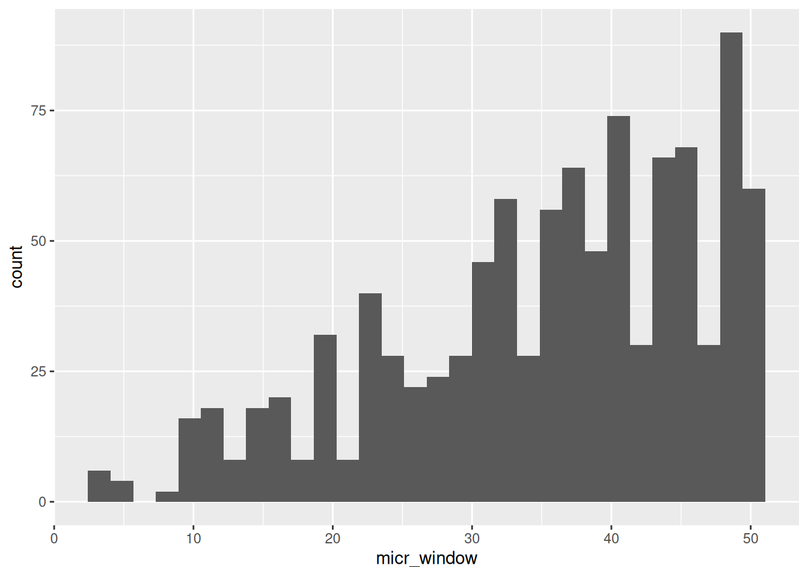
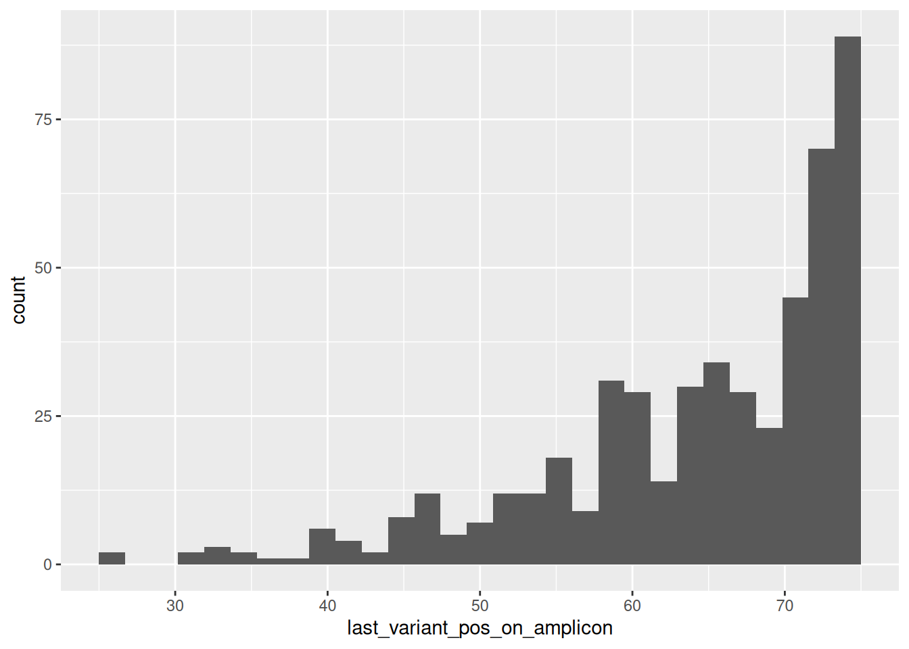
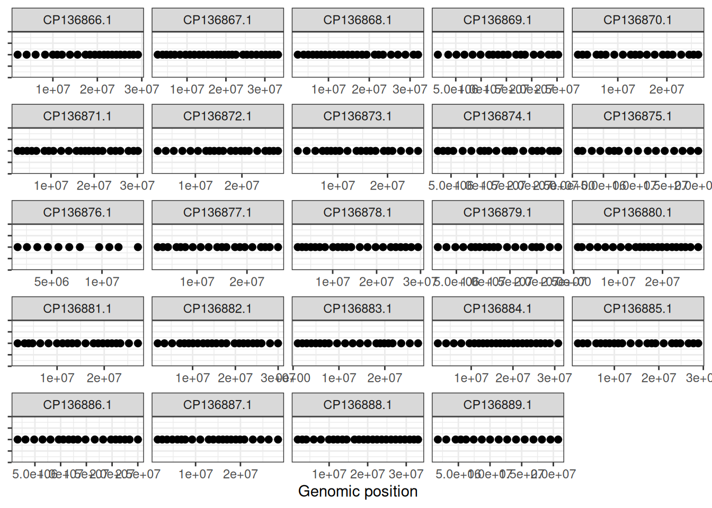
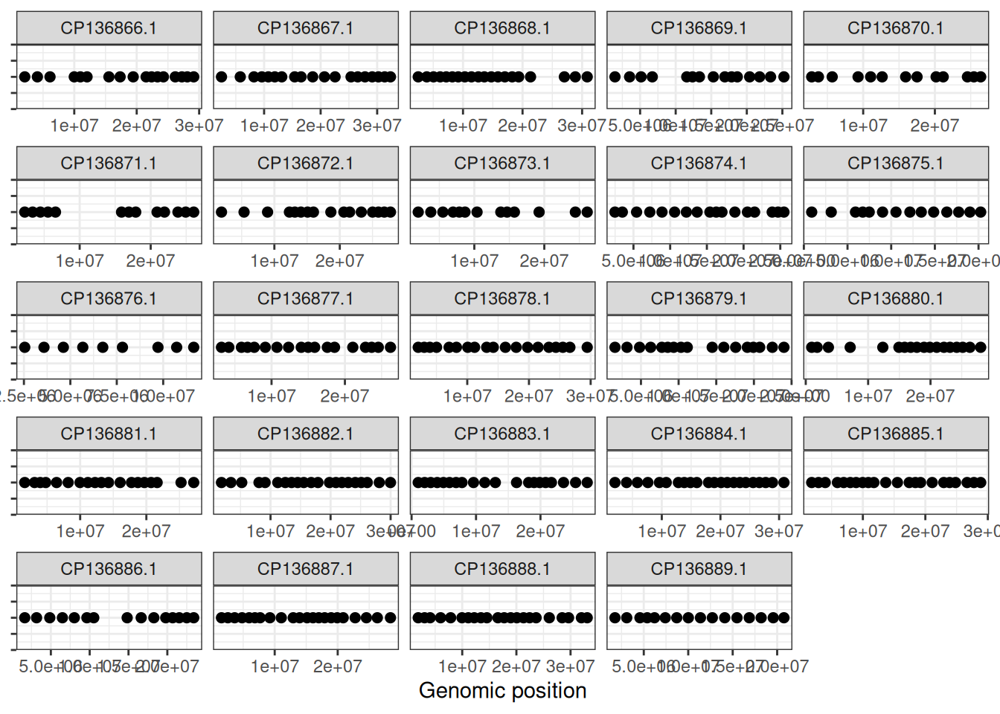

meta_data <- readxl::read_xlsx(here::here("data","raw","drum_wgs_samples.xlsx"))soce_dzyn26_initial_primer_design
I followed Tom Delomas’ primer design pipeline to generate 500 primers for a new GT-seq panel for red drum.
Raw reads
Chris Hollenbeck provided whole genome sequence data. They are located on the HPC in /marinegenomics/projects/fish/red_drum/drum_pop_wgs/raw/. Below is a quick overview of their metadata:
knitr::kable(
meta_data,
digits = 2,
caption = "Metadata of WGS Red Drum Samples"
)| tube_id | lab_id | region | species | seq_id |
|---|---|---|---|---|
| D5 | MAT25B | WGULF | Sciaenops ocellatus | 20043XD-02-25 |
| D6 | MAT47B | WGULF | Sciaenops ocellatus | 20043XD-02-26 |
| D7 | MAT40B | WGULF | Sciaenops ocellatus | 20043XD-02-27 |
| D8 | LLM4 | WGULF | Sciaenops ocellatus | 20043XD-02-28 |
| D9 | LLM47 | WGULF | Sciaenops ocellatus | 20043XD-02-29 |
| D10 | LLM16 | WGULF | Sciaenops ocellatus | 20043XD-02-30 |
| D11 | APM13051001 | EGULF | Sciaenops ocellatus | 20043XD-02-31 |
| D14 | APM13051001 | EGULF | Sciaenops ocellatus | 20043XD-02-34 |
| D15 | CHM13030302-2 | EGULF | Sciaenops ocellatus | 20043XD-02-35 |
| D21 | LLM5 | WGULF | Sciaenops ocellatus | 20043XD-02-41V1 |
| D22 | LLM33 | WGULF | Sciaenops ocellatus | 20043XD-02-42V1 |
| D23 | LLM52 | WGULF | Sciaenops ocellatus | 20043XD-02-43V1 |
| D24 | MAT49b | WGULF | Sciaenops ocellatus | 20043XD-02-44V1 |
| D25 | APM13030104-SPEC3 | EGULF | Sciaenops ocellatus | 20043XD-02-45V1 |
| D26 | APM13050401-SP3 | EGULF | Sciaenops ocellatus | 20043XD-02-46V1 |
| D27 | TB3B | EGULF | Sciaenops ocellatus | 20043XD-02-47V1 |
| D28 | TB4B | EGULF | Sciaenops ocellatus | 20043XD-02-48V1 |
| D30 | TB27B | EGULF | Sciaenops ocellatus | 20043XD-02-50V1 |
| D31 | TB28A | EGULF | Sciaenops ocellatus | 20043XD-02-51V1 |
| D32 | TB35A | EGULF | Sciaenops ocellatus | 20043XD-02-52V1 |
Genotyping
The raw reads were genotyped using Eriq Anderson’s mega-non-model-wgs-snakeflow pipeline https://github.com/eriqande/mega-non-model-wgs-snakeflow
There were several adjustments that were required before the pipeline could function normally. Details of adjustments made can be found in another document, “mega_snakeflow_on_crest.”
QC of the genotyping can be found here:
The working SNP set used for primer design was made from manually extracting biallelic snps from the pass-maf-0.05 bcf file generated from the pipeline.
The pass-maf-0.05 file was generated by these filters in GATK:
QD < 2.0 filtered QUAL < 30.0 filtered SOR > 3.0 filtered FS > 60.0 filtered MQ < 40.0 filtered MQRankSum < -12.5 filtered ReadPosRankSum < -8.0 filtered
and having a MAF of 0.05 or greater.
The working set of SNPs was called red_drum_maf005.snps.vcf.gz and was generated by manually selected biallelic snps with: bcftools view -v snps -m2 -M2
Phasing with WhatsHap
Each sample was phased independently using WhatsHap. The phased VCFs were generated from the filtered SNP VCF and corresponding overlap-clipped BAM files.
A representative command was:
whatshap phase
–reference /work/marinegenomics/jmatt1/wgs/mega_soce_cmh/resources/genome.fasta
–sample SAMPLE_NAME
–output SAMPLE.whatshap.vcf.gz
red_drum.maf005.snps.vcf.gz
overlap_clipped/SAMPLE.bam
Each phased VCF was indexed, and all 20 single-sample phased VCFs were merged into a single multi-sample phased VCF:
bcftools merge single_sample_vcfs/*.whatshap.vcf.gz
-Oz -o allWhatshap_red_drum_maf005.vcf.gz
bcftools index -t allWhatshap_red_drum_maf005.vcf.gz
The merged VCF contained 20 samples and phased genotype information.
Population-specific VCFs
The merged phased VCF was split into WGULF and EGULF population-specific VCFs using sample lists.
bcftools view -S WGULF.samples.txt
allWhatshap_red_drum_maf005.vcf.gz
-Oz -o allWhatshap_WGULF.vcf.gz
bcftools index -t allWhatshap_WGULF.vcf.gz
bcftools view -S EGULF.samples.txt
allWhatshap_red_drum_maf005.vcf.gz
-Oz -o allWhatshap_EGULF.vcf.gz
bcftools index -t allWhatshap_EGULF.vcf.gz
Each population-specific VCF contained 10 samples.
Optional HWE screening
To mimic the oyster-panel workflow, Hardy-Weinberg Equilibrium filtering was evaluated separately within WGULF and EGULF using PLINK.
VCF variant IDs were first set using chromosome and position:
bcftools annotate –set-id ‘%CHROM:%POS’ allWhatshap_EGULF.vcf.gz -Oz -o allWhatshap_EGULF.ids.vcf.gz bcftools annotate –set-id ‘%CHROM:%POS’ allWhatshap_WGULF.vcf.gz -Oz -o allWhatshap_WGULF.ids.vcf.gz
PLINK HWE tests were run with:
plink –vcf allWhatshap_EGULF.ids.vcf.gz –double-id –allow-extra-chr –hardy –out EGULF_ids plink –vcf allWhatshap_WGULF.ids.vcf.gz –double-id –allow-extra-chr –hardy –out WGULF_ids
SNPs with HWE p-value < 0.01 in either population were counted. A total of 70,715 SNPs failed this criterion, representing approximately 1.26% of SNPs tested. As a final step, candidate primers were filtered if they included these SNPs.
Microhaplotype expected heterozygosity
Microhaplotype expected heterozygosity was calculated using CalcHe_mh_vcf.jar.
For each population VCF, two window sizes were evaluated:
50 bp windows, corresponding to the 75 bp sequencing-read design 125 bp windows, corresponding to the 150 bp sequencing-read design
Example commands:
java -jar CalcHe_mh_vcf.jar -v allWhatshap_WGULF.vcf.gz -w 50 mv vcf_he_output.txt He_50_WGULF.txt
java -jar CalcHe_mh_vcf.jar -v allWhatshap_WGULF.vcf.gz -w 125 mv vcf_he_output.txt He_125_WGULF.txt
The same commands were run for EGULF, producing:
He_50_WGULF.txt He_125_WGULF.txt He_50_EGULF.txt He_125_EGULF.txt
Panel design inputs
Panel design was performed in R using a modified version of the oyster microhaplotype panel-design script.
The population input section was updated to:
inputfiles <- tibble( pop = c(“WGULF”, “EGULF”) )
For 75 bp read designs, the script used the 50 bp He files:
He_50_WGULF.txt He_50_EGULF.txt
For 150 bp read designs, the script used the 125 bp He files:
He_125_WGULF.txt He_125_EGULF.txt
Expected heterozygosity was summarized across populations using the minimum value:
summaryFunction <- min
This prioritizes loci that are informative in both WGULF and EGULF.
Other changes of the oyster panel design script were specifying the correct genome:
refGenome <- “/work/marinegenomics/jmatt1/wgs/mega_soce_cmh/resources/genome.fasta”
and using a Bowtie2 index for red drum.
A Bowtie2 index was built from the same reference genome:
bowtie2-build genome.fasta genome_bt2
and was specified in the panel design R script:
bowtie2_ref <- “/work/marinegenomics/jmatt1/wgs/mega_soce_cmh/resources/genome_bt2”
Chromosome names and lengths were also added to the R script. These were taken from the ref genome index file.
Primer design and filtering strategy
Primer design was performed with Primer3 through the panel-design R script.
The Primer3 executable was provided by the microhap conda environment:
primer3path <- “/home/jmatt1/.conda/envs/microhap/bin/primer3_core”
Primer design was run during each iteration of the greedy selection algorithm. A locus was only selected if valid primers could be designed and the primer pair mapped uniquely to the reference genome using Bowtie2.
The greedy algorithm balanced:
high minimum expected heterozygosity across WGULF and EGULF, even genomic distribution, successful Primer3 primer design, unique primer-pair mapping.
Eight panel-design runs were evaluated:
Rscript panel_design_drum.R red_drum_00_75 0 0 75 Rscript panel_design_drum.R red_drum_10_75 1 0 75 Rscript panel_design_drum.R red_drum_01_75 0 1 75 Rscript panel_design_drum.R red_drum_11_75 1 1 75
Rscript panel_design_drum.R red_drum_00_150 0 0 150 Rscript panel_design_drum.R red_drum_10_150 1 0 150 Rscript panel_design_drum.R red_drum_01_150 0 1 150 Rscript panel_design_drum.R red_drum_11_150 1 1 150
The first numeric argument controlled the no-recombination/complexity filter:
0: allow all loci 1: retain only loci where number of observed haplotypes was no greater than number of SNPs + 1
The second numeric argument controlled adjacent-SNP filtering:
0: allow adjacent SNPs 1: remove loci containing adjacent SNPs
The third numeric argument controlled the intended read-length design:
75: use 50 bp microhap windows 150: use 125 bp microhap windows
Output files
Each panel-design run produced:
To mimic the mimic the oyster panel design criteria, the 75 bp panels are most appropriate. To target a well-behaving panel, the recombination filter and adjacent SNP-filtering rules were selected. Thus, all results below are for the red_drum_11_75 panel.
The key output files were:
panel.txt: selected loci and expected heterozygosity
panel_txt <- read_table(here::here("data","raw","red_drum_11_75panel.txt"),
col_types = cols(Pos = col_character()))panel_txt# A tibble: 500 × 9
Chr Pos summaryHe wStart wEnd score lastStart lastEnd Locus
<chr> <chr> <dbl> <dbl> <dbl> <dbl> <dbl> <dbl> <chr>
1 CP136866.1 15550516,1… 0.75 1.56e7 1.56e7 2.32e7 1 3.10e7 CP13…
2 CP136866.1 23328565,2… 0.73 2.33e7 2.33e7 1.12e7 15550516 3.10e7 CP13…
3 CP136866.1 8254043,82… 0.75 8.25e6 8.25e6 1.09e7 1 1.56e7 CP13…
4 CP136866.1 4095338,40… 0.74 4.10e6 4.10e6 6.06e6 1 8.25e6 CP13…
5 CP136866.1 19438567,1… 0.715 1.94e7 1.94e7 5.56e6 15550516 2.33e7 CP13…
6 CP136866.1 27231431,2… 0.7 2.72e7 2.72e7 5.30e6 23328565 3.10e7 CP13…
7 CP136866.1 12045793,1… 0.685 1.20e7 1.20e7 4.80e6 8254043 1.56e7 CP13…
8 CP136866.1 17341669,1… 0.79 1.73e7 1.73e7 2.83e6 15550516 1.94e7 CP13…
9 CP136866.1 29130903,2… 0.74 2.91e7 2.91e7 2.80e6 27231431 3.10e7 CP13…
10 CP136866.1 13849107,1… 0.805 1.38e7 1.38e7 2.74e6 12045793 1.56e7 CP13…
# ℹ 490 more rowsMinimum expected heterozygosity (He) across WGULF and EGULF
panel_txt %>%
summarize(mean_he = mean(summaryHe),
min_he = min(summaryHe),
max_he = max(summaryHe),
n_loci = n())# A tibble: 1 × 4
mean_he min_he max_he n_loci
<dbl> <dbl> <dbl> <int>
1 0.707 0.48 0.815 500primers.txt: forward and reverse primer sequences
primers_txt <- read_table(here::here("data","raw","red_drum_11_75primers.txt"),
col_types = cols(Pos = col_character()))primers_txt# A tibble: 1,000 × 10
num seq orient tm start len genomeStart Chr Pos Locus
<dbl> <chr> <chr> <dbl> <dbl> <dbl> <dbl> <chr> <chr> <chr>
1 0 ACTGTTCTGTTTACT… left 59.0 29 23 15550493 CP13… 1555… CP13…
2 0 TCACTGATCAATAGC… right 58.4 133 23 15550597 CP13… 1555… CP13…
3 0 TCTGTGCTGAACATA… left 60.0 17 21 23328537 CP13… 2332… CP13…
4 0 GGGAGCGCAGATATC… right 60.0 103 20 23328623 CP13… 2332… CP13…
5 0 ACAACTTAGTACCTC… left 59.8 3 25 8254018 CP13… 8254… CP13…
6 0 TCCTCTGCAACCCAA… right 59.7 148 20 8254163 CP13… 8254… CP13…
7 0 GAACGCAGAATCTGG… left 61.0 18 20 4095318 CP13… 4095… CP13…
8 0 GCAACCAAAGCCTGC… right 59.9 99 20 4095399 CP13… 4095… CP13…
9 0 TGAAGCTCAGAGTGT… left 59.6 10 20 19438542 CP13… 1943… CP13…
10 0 CCTCAGGTCCGCTGT… right 59.2 121 20 19438653 CP13… 1943… CP13…
# ℹ 990 more rowspos.txt: SNP positions relative to the amplicon
pos_txt <- read_table(here::here("data","raw","red_drum_11_75pos.txt"),
col_types = cols(Pos = col_character()))pos_txt# A tibble: 1,891 × 4
Locus RefPos Type ValidAlt
<chr> <dbl> <chr> <chr>
1 CP136866.1_15550516_15550538 24 S T
2 CP136866.1_15550516_15550538 31 S C
3 CP136866.1_15550516_15550538 38 S T
4 CP136866.1_15550516_15550538 41 S A
5 CP136866.1_15550516_15550538 46 S T
6 CP136866.1_23328565_23328594 29 S A
7 CP136866.1_23328565_23328594 32 S T
8 CP136866.1_23328565_23328594 42 S G
9 CP136866.1_23328565_23328594 53 S A
10 CP136866.1_23328565_23328594 58 S T
# ℹ 1,881 more rowsfwd.txt: forward primer list for downstream genotyping
fwd_txt <- read_table(here::here("data","raw","red_drum_11_75fwd.txt"),
col_types = cols(Pos = col_character()))fwd_txt# A tibble: 500 × 2
Locus seq
<chr> <chr>
1 CP136866.1_15550516_15550538 ACTGTTCTGTTTACTCCTCTGGT
2 CP136866.1_23328565_23328594 TCTGTGCTGAACATAACCGCT
3 CP136866.1_8254043_8254089 ACAACTTAGTACCTCTTCTCACAGG
4 CP136866.1_4095338_4095374 GAACGCAGAATCTGGCACCA
5 CP136866.1_19438567_19438606 TGAAGCTCAGAGTGTGGTGG
6 CP136866.1_27231431_27231452 GCCTCTCGCAACCCTGATAA
7 CP136866.1_12045793_12045810 TGGAACGCTGTCATTTTTGGG
8 CP136866.1_17341669_17341706 ACTGAGAAAGGCCAATATTGATTGA
9 CP136866.1_29130903_29130947 CATGATTGGGTTGCAAGCTGT
10 CP136866.1_13849107_13849154 AGACAGACAGTGAGTGGGGA
# ℹ 490 more rowsampRef.fa: reference amplicon sequences
Sanity check of amplicons
We expect the 75 bp design corresponds to:
50 bp microhap windows variants targeted within the first 75 bp of the amplicon variants throughout the genome
check <- panel_txt %>%
select(-Chr,-Pos) %>%
left_join(primers_txt, by = "Locus") %>%
select(Locus, wStart, wEnd,orient, genomeStart,Pos, Chr) %>%
mutate(micr_window = wEnd - wStart + 1) %>%
mutate(last_variant_pos_on_amplicon = case_when(
orient == "left" ~ wEnd - genomeStart + 1))ggplot(check, aes(x = micr_window)) +
geom_histogram()
ggplot(check, aes(x = last_variant_pos_on_amplicon)) +
geom_histogram()
ggplot(panel_txt, aes(x = wStart, y = 1)) +
geom_point(size = 2) +
facet_wrap(~Chr, scales = "free_x") +
theme_bw() +
labs(x = "Genomic position", y = NULL) +
theme(axis.text.y = element_blank())
Looks good!
Initial panel summary
The makeup of the target amplicons were summarized with an R script (summarize_panel_runs.R)
panel_summ <- read_tsv(here::here("data","derived","panel_run_summary.tsv"))knitr::kable(
panel_summ %>% select(-run),
digits = 2,
caption = "Summary of 500 locus panel"
)| n_loci | mean_He | min_He | median_He | max_He | mean_snps_per_locus | median_snps_per_locus | n_primers | n_primer_pairs | mean_primer_tm | mean_amplicon_snp_count | mean_amplicon_length | median_amplicon_length | min_amplicon_length | max_amplicon_length |
|---|---|---|---|---|---|---|---|---|---|---|---|---|---|---|
| 500 | 0.71 | 0.48 | 0.71 | 0.81 | 3.78 | 4 | 1000 | 500 | 59.51 | 3.78 | 136.76 | 136 | 79 | 174 |
Note, the amplicon size here does not include the Illumina sequencing tags that are added during PCR1 or the tags that are added during PCR2:
With the sequencing tags:+ 67 With the P5 and i5: + 65
Expected minimum: 79+132 = 211 Expected median: 136+132 = 268 Expected max: 174+132 = 316
Check for interactions
Run primers through Primer Pooler
Settings for primer pooler:
annealing temp is the minimum temp used in your primer design (in our case, 57C) magnesium is 3mM (specific to the Qiagen mastermix we use for gtseq) Sodium (use default setting of 50) dNTP is 0.8mM (specific to Qiagen mastermix we use)
Interactions identified by primer pooler with dG less than -4
hits_loci <- hits %>%
#mutate(primer1 = str_replace_all(primer1,"-","_")) %>%
#mutate(primer2 = str_replace_all(primer2, "-","_")) %>%
mutate(
locus1 = str_remove(primer1, "-[FR]$"),
locus2 = str_remove(primer2, "-[FR]$")
) %>%
mutate(locus1 = str_replace_all(locus1,"-","_")) %>%
mutate(locus2 = str_replace_all(locus2, "-","_"))
hits_loci# A tibble: 1,568 × 6
hit_id primer1 primer2 dG locus1 locus2
<int> <chr> <chr> <dbl> <chr> <chr>
1 1 soce-0005-F soce-0267-R -10.9 soce_0005 soce_0267
2 2 soce-0036-F soce-0310-F -8.8 soce_0036 soce_0310
3 3 soce-0436-F soce-0436-F -8.55 soce_0436 soce_0436
4 4 soce-0177-R soce-0427-R -8.4 soce_0177 soce_0427
5 5 soce-0147-R soce-0232-F -8.13 soce_0147 soce_0232
6 6 soce-0205-R soce-0322-F -7.9 soce_0205 soce_0322
7 7 soce-0142-F soce-0381-R -7.77 soce_0142 soce_0381
8 8 soce-0267-R soce-0470-R -7.7 soce_0267 soce_0470
9 9 soce-0169-R soce-0169-R -7.7 soce_0169 soce_0169
10 10 soce-0135-R soce-0486-F -7.5 soce_0135 soce_0486
# ℹ 1,558 more rowsGoing to filter out interactions with a dG less than -5.5 (lower dG, more chance for interaction)
Run a script to remove the fewest number of loci that overcomes the interaction issues
edges <- hits_loci %>%
filter(dG < -5.5) %>%
select(locus1, locus2)
removed <- character()
while(nrow(edges) > 0){
counts <-
c(edges$locus1, edges$locus2) |>
table() |>
sort(decreasing = TRUE)
remove <- names(counts)[1]
removed <- c(removed, remove)
edges <-
edges %>%
filter(locus1 != remove,
locus2 != remove)
}
removed [1] "soce_0436" "soce_0069" "soce_0159" "soce_0169" "soce_0086" "soce_0142"
[7] "soce_0232" "soce_0427" "soce_0017" "soce_0026" "soce_0053" "soce_0063"
[13] "soce_0074" "soce_0079" "soce_0105" "soce_0110" "soce_0118" "soce_0125"
[19] "soce_0175" "soce_0236" "soce_0249" "soce_0267" "soce_0286" "soce_0297"
[25] "soce_0378" "soce_0475" "soce_0003" "soce_0010" "soce_0011" "soce_0016"
[31] "soce_0034" "soce_0035" "soce_0036" "soce_0046" "soce_0048" "soce_0050"
[37] "soce_0094" "soce_0095" "soce_0102" "soce_0103" "soce_0112" "soce_0116"
[43] "soce_0119" "soce_0127" "soce_0132" "soce_0135" "soce_0136" "soce_0138"
[49] "soce_0143" "soce_0144" "soce_0168" "soce_0177" "soce_0188" "soce_0194"
[55] "soce_0205" "soce_0206" "soce_0220" "soce_0253" "soce_0284" "soce_0292"
[61] "soce_0298" "soce_0349" "soce_0352" "soce_0394"Ok, let’s remove these:
primer_seqs_filt <- primer_seqs %>%
mutate(locus = str_remove(locus_id, "_[FR]$")) %>%
filter(!locus %in% removed)Loci remaining:
nrow(primer_seqs_filt)/2[1] 436primer_pooler_filt <- primer_seqs_filt %>%
mutate(seq_name = str_replace_all(locus_id, "_", "-")) %>%
select(seq_name, seq)Running primer pooler again to confirm:
edges <- hits_loci %>%
filter(dG < -5.5) %>%
select(locus1, locus2)
removed <- character()
while(nrow(edges) > 0){
counts <-
c(edges$locus1, edges$locus2) |>
table() |>
sort(decreasing = TRUE)
remove <- names(counts)[1]
removed <- c(removed, remove)
edges <-
edges %>%
filter(locus1 != remove,
locus2 != remove)
}
removedcharacter(0)Confirms that we removed all interactions with dG less than -5.5
Run blast for final check
Ok, now let’s run blast as a final check
library(seqhelp) #notice this is version 0.0.0.9000
library(janitor)
CONDA_ENV <- "paneldesign"
CONDA_PATH <- Sys.getenv("CONDA_PATH")self_blast function in seqhelp not operating right, so using slightly modified function
self_blast_fixed <- function(seq, id, conda_env = CONDA_ENV, conda_sh_path = CONDA_PATH) {
tmp_dir <- tempdir()
tmp_fasta <- glue::glue(tmp_dir, "tmp.fasta", .sep = "/")
tmp_db <- glue::glue(tmp_dir, "tmp", .sep = "/")
tmp_out <- glue::glue(tmp_dir, "tmp_out.blast", .sep = "/")
seqhelp::write_fasta(file = tmp_fasta, seq = seq, names = id)
invisible({
seqhelp::systemc(
glue::glue("makeblastdb -in {tmp_fasta} -dbtype nucl -out {tmp_db}"),
env = conda_env,
ignore_stdout = TRUE,
ignore_stderr = TRUE,
conda_sh_path = conda_sh_path
)
seqhelp::systemc(
glue::glue("blastn -query {tmp_fasta} -db {tmp_db} -outfmt 6 -task blastn-short > {tmp_out}"),
env = conda_env,
conda_sh_path = conda_sh_path
)
})
blast_results <- seqhelp::read_blast(tmp_out)
blast_results <- blast_results %>%
dplyr::filter(.data$qseqid != .data$sseqid) %>%
dplyr::arrange(dplyr::desc(.data$bitscore))
return(blast_results)
}blast_res_filt <- self_blast_fixed(seq = primer_seqs_filt$seq, id = primer_seqs_filt$locus_id)Any primers that are exactly the same?
primer_lengths <- primer_seqs %>%
transmute(
primer_id = locus_id,
primer_len = nchar(seq)
)
identical_flags <- blast_res_filt %>%
left_join(primer_lengths, by = c("qseqid" = "primer_id")) %>%
rename(q_len = primer_len) %>%
left_join(primer_lengths, by = c("sseqid" = "primer_id")) %>%
rename(s_len = primer_len) %>%
filter(
pident == 100,
length >= 15,
qstart == 1,
qend == q_len,
sstart == 1,
send == s_len
) %>%
mutate(
q_locus = str_remove(qseqid, "_[FR]$"),
s_locus = str_remove(sseqid, "_[FR]$")
) %>%
filter(q_locus != s_locus)
identical_flags# A tibble: 2 × 16
qseqid sseqid pident length mismatch gapopen qstart qend sstart send evalue
<chr> <chr> <dbl> <int> <int> <int> <int> <int> <int> <int> <dbl>
1 soce_… soce_… 100 21 0 0 1 21 1 21 3.12e-8
2 soce_… soce_… 100 21 0 0 1 21 1 21 3.12e-8
# ℹ 5 more variables: bitscore <dbl>, q_len <int>, s_len <int>, q_locus <chr>,
# s_locus <chr>primer_seqs_filt %>%
filter(locus_id %in% c("soce_0251_R","soce_0494_R"))# A tibble: 2 × 3
locus_id seq locus
<chr> <chr> <chr>
1 soce_0251_R TTTCTGCTGTGAAGTTGGACA soce_0251
2 soce_0494_R TTTCTGCTGTGAAGTTGGACA soce_0494Yes, these two are exactly the same
Is it better to remove 251 or 494?
hits_loci %>%
filter(grepl("0251",locus1) | grepl("0251",locus2))# A tibble: 5 × 6
hit_id primer1 primer2 dG locus1 locus2
<int> <chr> <chr> <dbl> <chr> <chr>
1 73 soce-0087-R soce-0251-R -5.07 soce_0087 soce_0251
2 265 soce-0251-F soce-0484-F -4.44 soce_0251 soce_0484
3 500 soce-0251-R soce-0432-R -4.15 soce_0251 soce_0432
4 643 soce-0238-F soce-0251-R -4.07 soce_0238 soce_0251
5 657 soce-0251-F soce-0346-F -4.06 soce_0251 soce_0346hits_loci %>%
filter(grepl("0494",locus1) | grepl("0494",locus2))# A tibble: 3 × 6
hit_id primer1 primer2 dG locus1 locus2
<int> <chr> <chr> <dbl> <chr> <chr>
1 74 soce-0087-R soce-0494-R -5.07 soce_0087 soce_0494
2 579 soce-0432-R soce-0494-R -4.15 soce_0432 soce_0494
3 644 soce-0238-F soce-0494-R -4.07 soce_0238 soce_0494Better to remove 251.
filtered_primers <- primer_seqs_filt %>%
filter(!grepl("0251",locus))I did not use the blast results to filter out any other loci, but am open to it.
Check if any SNPs failing HWE are in the filtered loci set
hwe_fail <- readLines(here::here("data","derived","HWE_fail_any_pop.sites"))
panel_txt_filt <- panel_txt %>%
rename(original_prefix = Locus) %>%
left_join(locus_name_key, by = "original_prefix") %>%
filter(locus_prefix %in% filtered_primers$locus) %>%
select(-locus_id, -original_prefix, -original_name) %>%
distinct()
panel_snps <- panel_txt_filt %>%
separate_rows(Pos, sep = ",") %>%
mutate(
snp_id = paste0(Chr, ":", Pos)
)panel_hwe_hits <- panel_snps %>%
filter(snp_id %in% hwe_fail)
panel_hwe_hits %>%
count(locus_prefix, name = "n_failed_snps") %>%
arrange(desc(n_failed_snps))# A tibble: 18 × 2
locus_prefix n_failed_snps
<chr> <int>
1 soce_0433 3
2 soce_0091 2
3 soce_0027 1
4 soce_0045 1
5 soce_0090 1
6 soce_0120 1
7 soce_0123 1
8 soce_0140 1
9 soce_0161 1
10 soce_0174 1
11 soce_0192 1
12 soce_0218 1
13 soce_0320 1
14 soce_0327 1
15 soce_0331 1
16 soce_0419 1
17 soce_0463 1
18 soce_0476 1Yes, looks like there are 18 amplicons that would contain at least one of these snps. Let’s filter these out.
remove_hwe <- panel_hwe_hits %>%
count(locus_prefix, name = "n_failed_snps") %>%
arrange(desc(n_failed_snps)) %>%
pull(locus_prefix)final_set_primers <- filtered_primers %>%
filter(!locus %in% remove_hwe)
final_set_primers# A tibble: 834 × 3
locus_id seq locus
<chr> <chr> <chr>
1 soce_0001_F ACTGTTCTGTTTACTCCTCTGGT soce_0001
2 soce_0001_R TCACTGATCAATAGCAAGCTTGT soce_0001
3 soce_0002_F TCTGTGCTGAACATAACCGCT soce_0002
4 soce_0002_R GGGAGCGCAGATATCGTGAA soce_0002
5 soce_0004_F GAACGCAGAATCTGGCACCA soce_0004
6 soce_0004_R GCAACCAAAGCCTGCTCAAA soce_0004
7 soce_0005_F TGAAGCTCAGAGTGTGGTGG soce_0005
8 soce_0005_R CCTCAGGTCCGCTGTTGATA soce_0005
9 soce_0006_F GCCTCTCGCAACCCTGATAA soce_0006
10 soce_0006_R AGTTACCATGCAAATGTCACGA soce_0006
# ℹ 824 more rows417 primer combinations (F & R) remaining
Overview of final set of primers
ggplot(panel_txt_final , aes(x = wStart, y = 1)) +
geom_point(size = 2) +
facet_wrap(~Chr, scales = "free_x") +
theme_bw() +
labs(x = "Genomic position", y = NULL) +
theme(axis.text.y = element_blank())
Interesting, what is going on with CP136871.1…